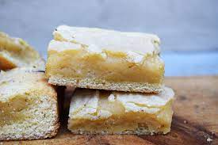

Spectacular white brownies

With this recipe you can create a delicous white brownies.
Ingredients
- 1 package white cake mix
- 1/3 cup brown sugar
- 1 egg
- 1/3 cup milk
- 1 cup butterscotch chips
Steps
- Preheat the oven to 325 degrees F (165 degrees C). Grease a 9x13 inch baking pan.
- In a large bowl, stir together the cake mix and brown sugar. Add egg and milk; mix until well blended. Stir in the butterscotch chips. Spread the dough evenly into the prepared pan.
- Bake for 25 to 30 minutes in the preheated oven, until brownies pull away form the edge of the pan slightly. Cool in the pan on a wire rack then cut into bars.